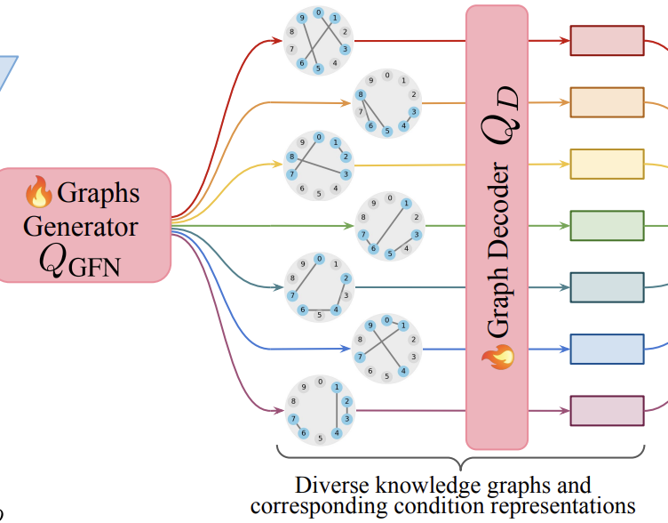

Discovering Latent Graphs with GFlowNets for Diverse Conditional Image Generation
Advances in Neural Information Processing Systems (NeurIPS), 2025
@inproceedings{trang2025discovering,
title = {Discovering Latent Graphs with GFlowNets for Diverse Conditional Image Generation},
author = {Nguyen, Bailey Trang and Saremi, Parham and Wang, Alan Q. and Huang, Fangrui and TehraniNasab, Zahra and Kumar, Amar and Arbel, Tal and Fei-Fei, Li and Adeli, Ehsan},
booktitle = {Advances in Neural Information Processing Systems (NeurIPS)},
year = {2025},
eprint = {2510.22107},
archivePrefix = {arXiv},
primaryClass = {cs.CV}
}